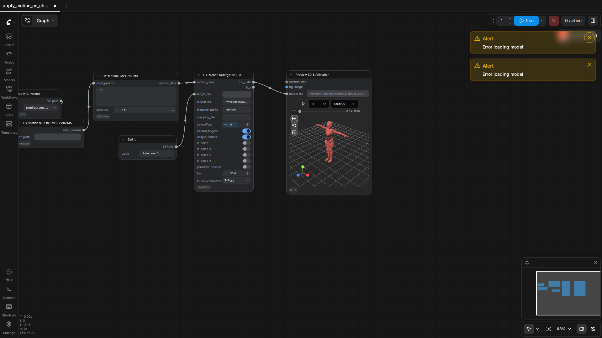
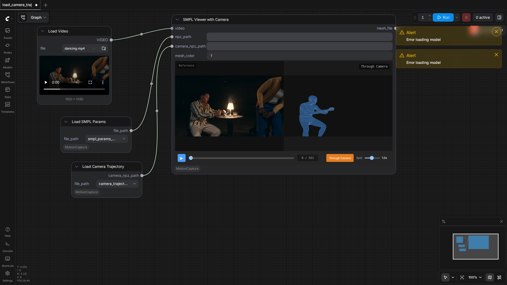
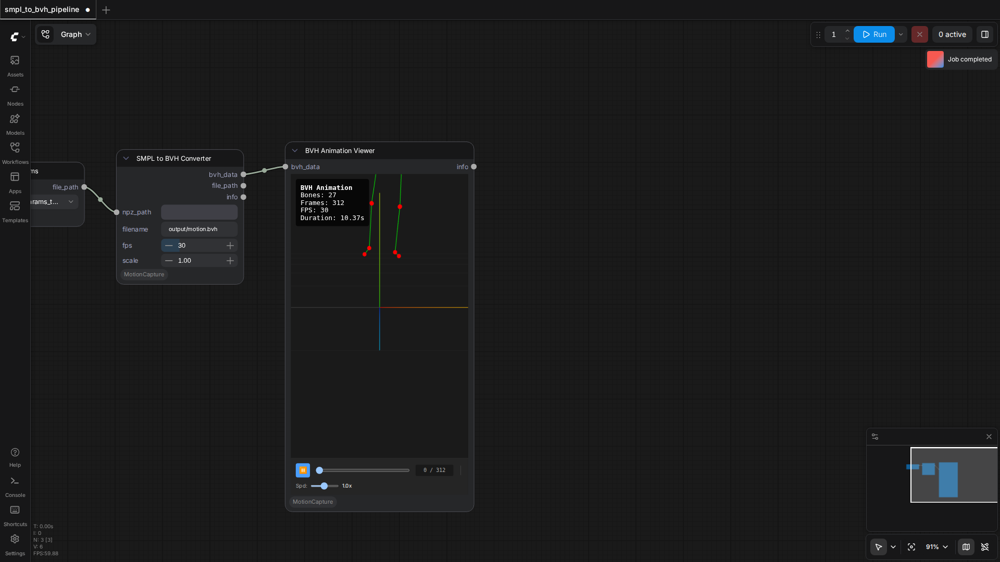

PozzettiAndrea/ComfyUI-MotionCapture
Test Results
2026-05-16 19:46 UTC
Test run
Linux-6.17.0-1013-azure-x86_64-with-glibc2.39
Intel(R) Xeon(R) Platinum 8370C CPU @ 2.80GHz
100.0%
3 passed
3/3 tests
Workflows
Grid
List

apply_motion_on_character
pass
23.46s

load_camera_traj
pass
41.92s

smpl_to_bvh_pipeline
pass
10.77s
Downloaded Models
3 files · 311.2 MB
models/motion_capture/
311.2 MB
body_models/smplx/SMPLX_FEMALE.npz
103.8 MB
body_models/smplx/SMPLX_MALE.npz
103.7 MB
body_models/smplx/SMPLX_NEUTRAL.npz
103.7 MB
×
‹
›
0.0s / 0.0s
Resource Usage
RAM (GB)
VRAM (GB)